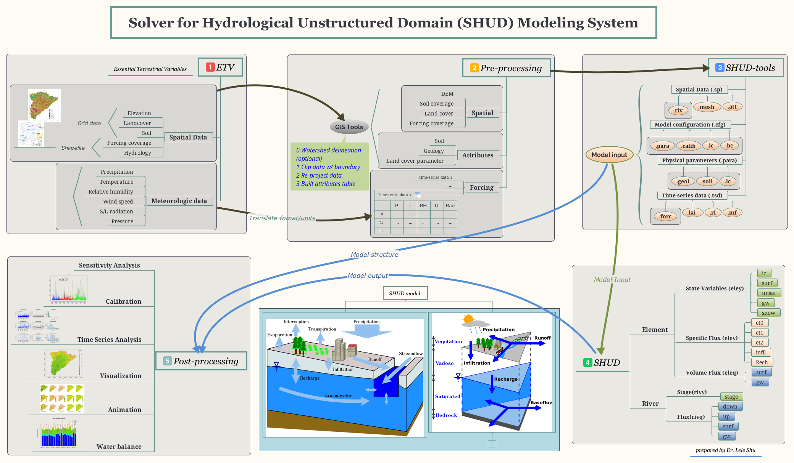

Chapter 4 快速、可重复和自动化水文模拟
本章节正式施工中～～～
4.1 SHUD模拟的基本步骤。
4.1.1 地形关键变量
- Atmospheric forcing (precipitation, snow cover, wind, relative humidity, temperature, net radiation, albedo, photosynthetic atmospheric radiation, leaf area index)
- Digital elevation model (DEM)
- River/stream discharge
- Soil (class, hydrologic properties)
- Groundwater (levels, extent, hydro-geologic properties)
- Lake/Reservoir (levels, extent)
- Land cover and land use (biomass, human infrastructure, demography, ecosystem disturbance)
- Water use
Most data reside on federal servers ….many petabytes.
4.1.2 A-Priori Data Sources
| Feature/Time-Series | Property | Source |
|---|---|---|
| Soil | Porosity; Sand, Silt, Clay Fractions; Bulk Density | CONUS, SSURGO and STATSGO |
| Geology | Bed Rock Depth; Horizontal and Vertical Hydraulic Conductivity | http://www.dcnr.state.pa.us/topogeo/, http://www.lias.psu.edu/emsl/guides/X.html |
| Land Cover | LAI | UMC, LDASmapveg; |
| Land Cover | Manning’s Roughness; | Hernandez et. al., 2000 |
| River | Manning’s Roughness; | Dingman (2002) |
| River | Coefficient of Discharge | ModHms Manual (Panday and Huyakorn, 2004) |
| River | Shape and Dimensions; | Derived from regression using depth, width, and discharge data from USGS data |
| River | Topology: Nodes, Neighboring cells; | Derived using PIHMgis (Bhatt et. al., 2008) |
| Forcing | Prec, Temp. RH, Wind, Rad. | National Land Data Assimilation System: NLDAS-2 |
| Topography | DEM | http://seamless.usgs.gov/ |
| Streamflow | http://nwis.waterdata.usgs.gov/nwis/sw | |
| Groundwater | http://nwis.waterdata.usgs.gov/nwis/gw |
4.2 Workflow of SHUD Modeling System
- Prepare raw Essential Terrestrial Variables (ETV)
- Convert and crop raw data with the research area boundary.
- Build the unstructued modeling domain with SHUDboolbox
- Run SHUD on desktop or cluster.
- Analysis the SHUD model results with SHUDboolbox or your hydrologic analysis tools.

The workflow of modeling with SHUD Modeling System